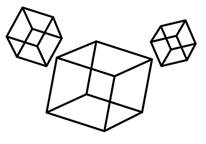

Prev - #29 Pyramid Drawing | Table of Contents | Next - #31 Convert Integers To Strings
drawBox(2) →
+----+
/ /|
/ / |
+----+ +
| | /
| |/
+----+

In this exercise, we’ll move from 2D ASCII art into 3D ASCII art by programmatically generating boxes at any given size.
Exercise Description
Write a drawBox() function with a size parameter. The size
parameter contains an integer for the width, length, and height of the box. The
horizontal lines are drawn with - dash characters,
the vertical lines with | pipe characters, and the
diagonal lines with / forward slash characters. The
corners of the box are drawn with + plus signs.
There are no Python assert statements
to check the correctness of your program. Instead, you can visually inspect the
output yourself. For example, calling drawBox(1) through
drawBox(5) would output the following boxes,
respectively:
+----------+
/ /|
+--------+ / / |
/ /| / / |
+------+ / / | / / |
/ /| / / | / / |
+----+ / / | / / | +----------+ +
/ /| / / | +--------+ + | | /
+--+ / / | +------+ + | | / | | /
/ /| +----+ + | | / | | / | | /
+--+ + | | / | | / | | / | | /
| |/ | |/ | |/ | |/ | |/
+--+ +----+ +------+ +--------+ +----------+
Size 1 Size 2 Size 3 Size 4 Size 5
If the argument for size is less than 1, the function prints nothing.
Try to write a solution based on the information in this description. If you still have trouble solving this exercise, read the Solution Design and Special Cases and Gotchas sections for additional hints.
Prerequisite concepts: strings, string concatenation, string
replication, for loops, range()
Solution Design
This exercise is a significant leap in complexity compared to the previous rectangle, border, and pyramid drawing exercises. Nine different lines must be drawn, as well as several whitespace areas on the left side and interior of the box. However, solving this exercise is still a matter of figuring out the sizing patterns. Drawing the boxes manually in a text editor first can help you determine the pattern behind the boxes’ lines. Here are the boxes from size 1 to 5 with the lines numbered and the whitespace marked with periods (since spaces’ invisibility makes them hard to count):
......+----1-----+
...../........../|
.....+---1----+ ..../........../.|
..../......../| ...2..........3..4
....+--1---+ ...2........3.4 ../........../...|
.../....../| ../......../..| ./........../....|
...+-1--+ ..2......3.4 ./......../...| +----5-----+.....+
../..../| ./....../..| +---5----+....+ |..........|..../
..+1-+ .2....3.4 +--5---+...+ |........|.../ |..........|.../
.2..34 +-5--+..+ |......|../ 6........7..8 6..........7..8
+5-+.+ 6....7.8 6......7.8 |........|./ |..........|./
6..78 |....|/ |......|/ |........|/ |..........|/
+9-+ +-9--+ +--9---+ +---9----+ +----9-----+
Size 1 Size 2 Size 3 Size 4 Size 5
Because print() calls display text
left-to-right and top-to-bottom, we’ll have to consider the lines and
whitespace in that order. For the following descriptions, note that size is the integer parameter passed to the drawBox() function.
The box’s diagonal lines follow the pattern of having size slash characters. The box’s vertical lines follow the
pattern of having size pipe characters. Meanwhile, the
horizontal lines made of size * 2 dash characters.
Look at the largest box on the right of the above diagram: The horizontal lines
1, 5, and 9 are made of 10 - dash characters (that
is, size * 2). The diagonal lines 2, 3, and 8 are
made of 5 / slash characters (that is, size). The
vertical lines 4, 6, and 7 are also made of 5 | pipe characters (that is, size).
The horizontal lines 1, 5, and 9 are identical: They’re made of a
+ plus character, followed by size * 2 dash characters
and another + plus character. Line 1 has a number of
spaces to the left of the line that equals size + 1.
The interior spaces for the top and front surfaces of the box are
size space characters, the same as the number of - dash characters. The interior space of the right surface
of the box is trickier. For example, here’s a box with size as 5 with the
right-side surface spaces marked with periods:
+----------+
/ /| 0 periods
/ /.| 1 period
/ /..| 2 periods
/ /...| 3 periods
/ /....| 4 periods
+----------+.....+ 5 periods
| |..../ 4 periods
| |.../ 3 periods
| |../ 2 periods
| |./ 1 period
| |/ 0 periods
+----------+
Size 5
As you print the top surface, the right-side surface has an
increasing number of spaces ranging from 0 to size - 1 before printing the |
pipe character of line 4. When you print line 5, the right-side surface has
exactly size spaces before printing the + plus sign for the corner. And as you print the front
surface, the right-side surface has a decreasing number of spaces ranging from size - 1 to 0 before printing
the / slash character of line 8.
Finally, you’ll print the + plus and - dash characters of line 9 at the bottom.
Special Cases and Gotchas
There’s nothing unexpected about printing these boxes. While
there are many things to keep track of, always remember that the number of
space and dash characters you print in each row is always relative to the size parameter. There will be size
pipe and slash characters in each vertical line, and size *
2 dash characters in each horizontal line.
Now try to write a solution based on the information in the previous sections. If you still have trouble solving this exercise, read the Solution Template section for additional hints.
Solution Template
Try to first write a solution from scratch. But if you have difficulty, you can use the following partial program as a starting place. Copy the following code from https://invpy.com/boxdrawing-template.py and paste it into your code editor. Replace the underscores with code to make a working program:
def drawBox(size):
# Special case: Draw nothing if size is less than 1:
if size < ____:
return
# Draw back line on top surface:
print(' ' * (____ + 1) + '+' + '-' * (____ * 2) + '+')
# Draw top surface:
for i in range(____):
print(' ' * (____ - i) + '/' + ' ' * (____ * 2) + '/' + ' ' * i + '|')
# Draw top line on top surface:
print(____ + ____ * (size * 2) + ____ + ' ' * size + '+')
# Draw front surface:
for i in range(size - 1, ____, ____):
print(____ + ' ' * (size * ____) + ____ + ' ' * i + ____)
# Draw bottom lie on front surface:
print(____ + ____ * (size * 2) + ____)
# In a loop, call drawBox() with arguments 1 to 5:
for i in range(1, 6):
drawBox(i)
The complete solution for this exercise is given in Appendix A and https://invpy.com/boxdrawing.py. You can view each step of this program as it runs under a debugger at https://invpy.com/boxdrawing-debug/.
Further Reading
If you enjoy the challenge of these generative ASCII art exercises, check out https:// github.com/asweigart/programmedpatterns/. This website has several growing patterns that you can try to replicate as Python programs. For example, one such pattern looks like this:
# # # #
## ## ## ##
### ### ###
#### ####
#####
The first four steps of the pattern are provided. You could then write
a function with a step parameter that prints the
pattern at that given step. There are hundreds of patterns featured on the
site.
Prev - #29 Pyramid Drawing | Table of Contents | Next - #31 Convert Integers To Strings